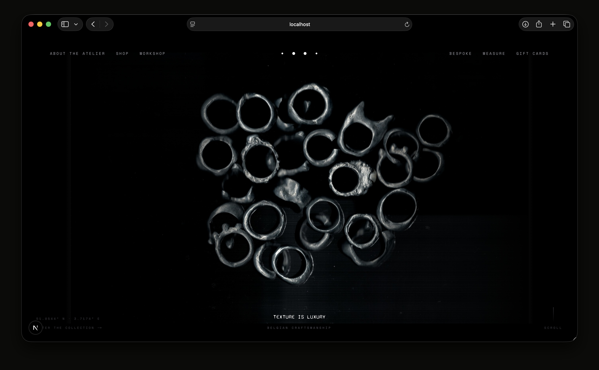
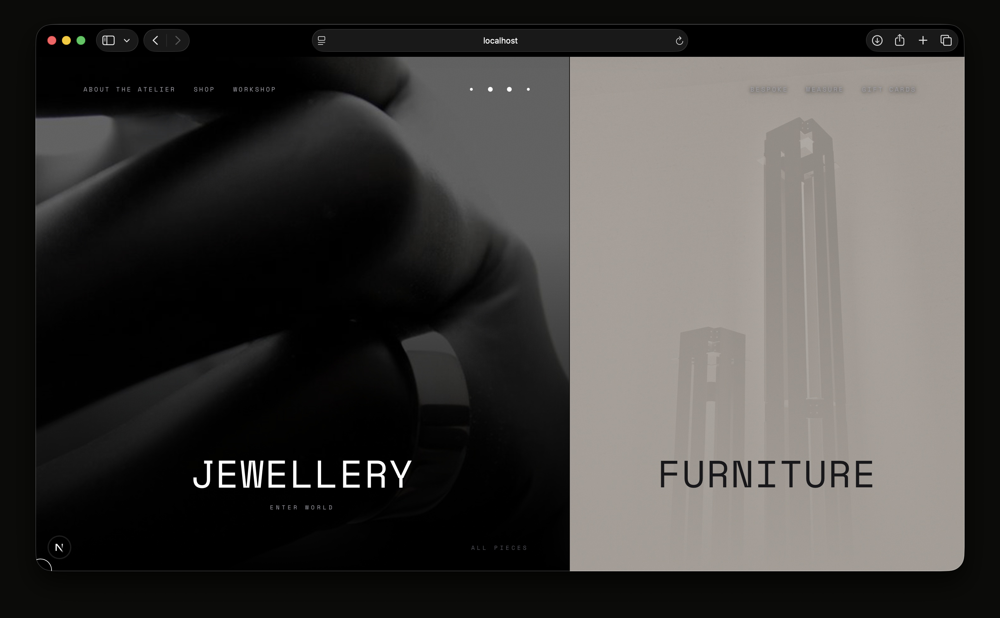
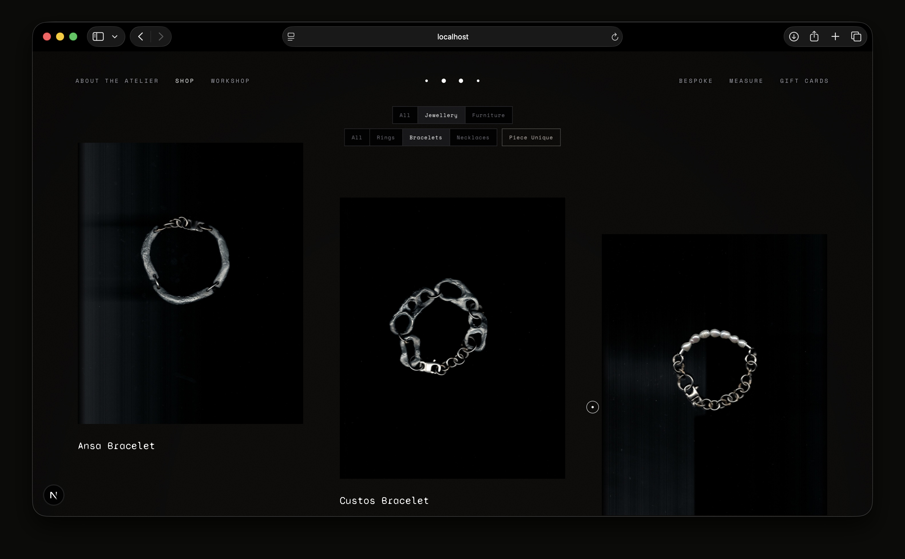
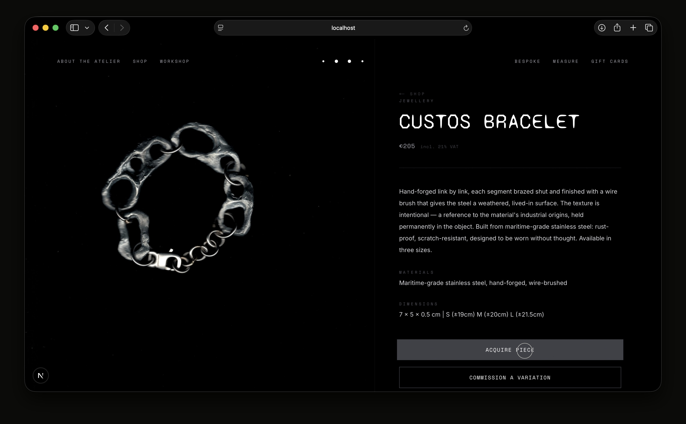
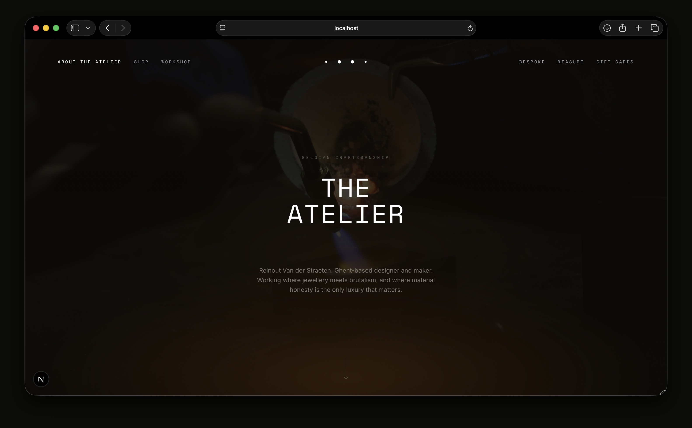

W — 01
Atelier Martis
First commissioned web project, built end-to-end. Atelier Martis is a creative studio working at the intersection of interior, object, and spatial design — the brief was to build something that felt considered and quiet, not a portfolio that shouts. Clean typographic structure, generous whitespace, nothing decorative. A site that lets the work breathe.




